Auto-enroll Entra hybrid-joined devices to Intune via GPO
หากเครื่องเป็น Entra hybrid joined device แล้วจาก Microsoft Entra hybrid join targeted deployment
เราก็จะ enroll เขาเข้า Intune ต่อไป โดยอัตโนมัติ ด้วย Group Policy
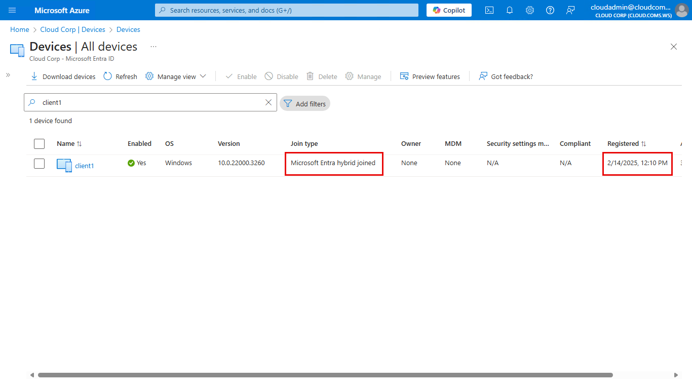
และเนื่องจาก self-onboarding guide จะเป็นเน้นที่การเริ่มต้นใช้งานโดยไม่ส่งผลกระทบกับระะบทั้งหมด เราจึงจะ pilot แค่บางเครื่องก่อนนะครับ
1. Preparation
1.1 Assign Intune license to a tested user
Assign Intune license ให้ user ที่จะใช้งาน Intune
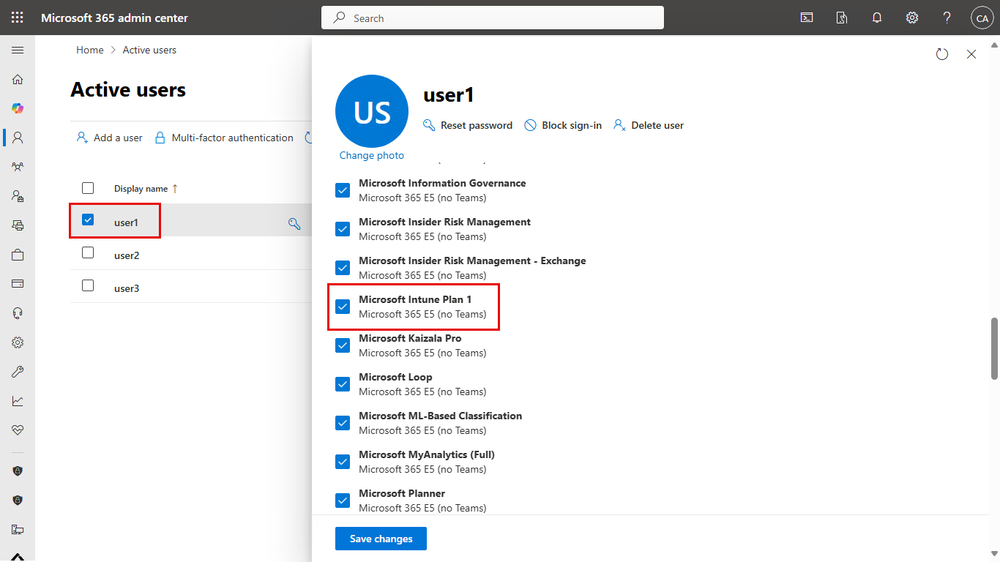
1.2 Create a pilot user group
สร้าง pilot user group (เช่น G Intune Pilot Users Group)
แล้วใส่ pilot user เช่น user1 เป็นสมาชิก
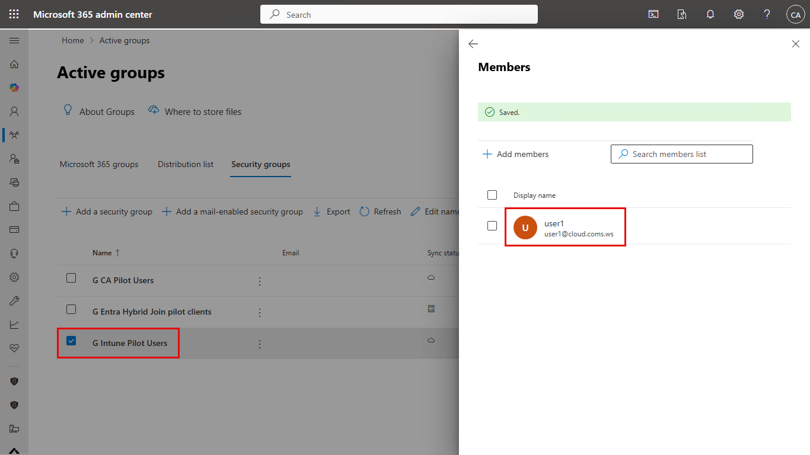
1.3 Enable Intune auto enrollment for Windows devices
จากนั้น enable auto enrollment สำหรับ Windows device ให้กับ pilot user group
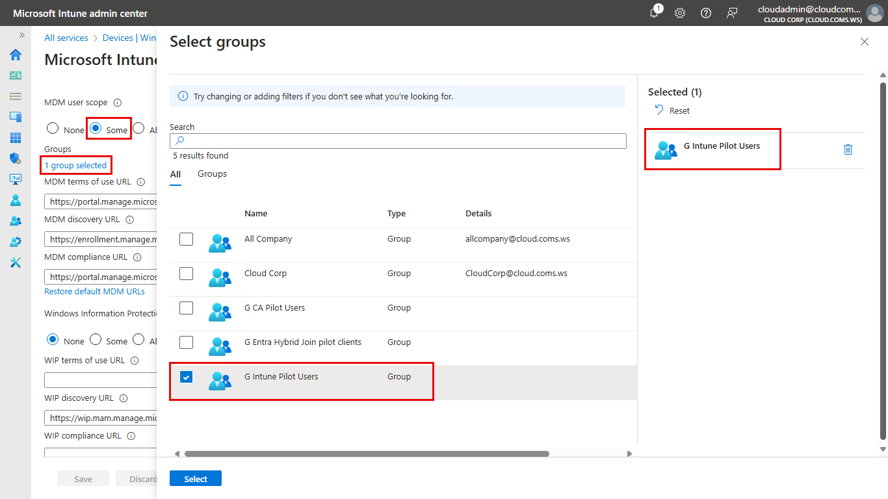
แล้วเราก็ไป configure GPO ต่อ
2. Enroll a Windows device automatically using Group Policy
สร้าง GPO แล้ว link ไปที่ OU ที่มี pilot client อยู่
แต่ให้เราเอา Authenticated users ออกจาก Security Filtering ไปก่อน
แล้วใส่แค่เครื่องที่ต้องการ pilot เข้ามาครับ
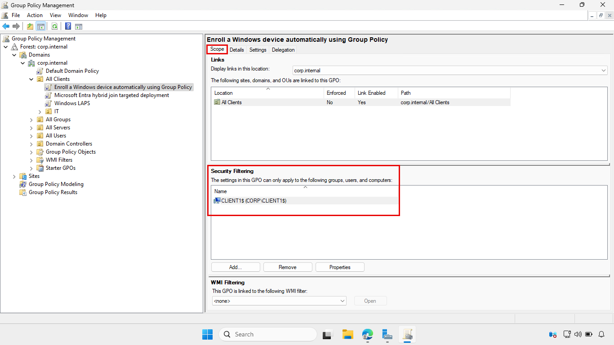
จากนั้นตั้งค่า settings ใน GPO ตาม Enroll a Windows device automatically using Group Policy
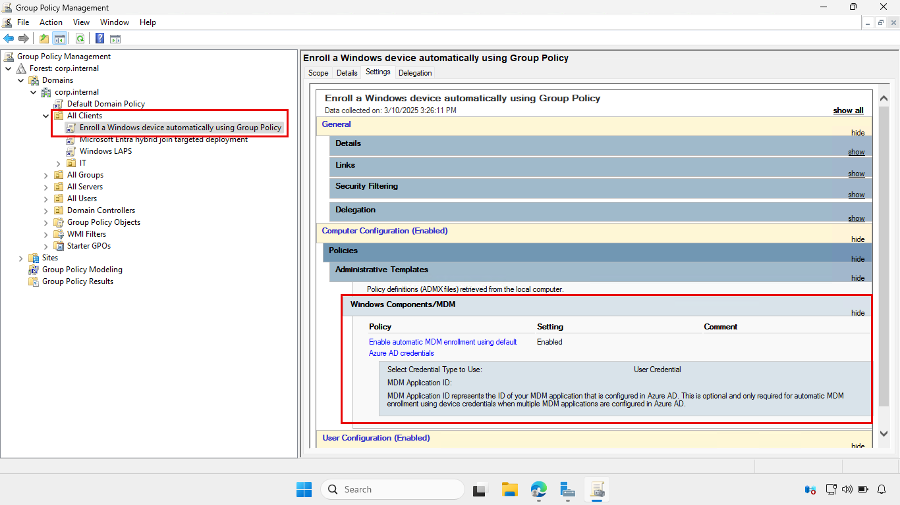
เมื่อ GPO เสร็จเรียบร้อย เราก็พร้อมทดสอบครับ
หมายเหตุ:
GPO จะสร้าง scheduled task ใช้ enroll เครื่องเข้า Intune
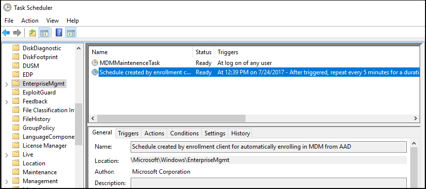
3. Test a client
1. Restart client เพื่อรับ GPO เลย
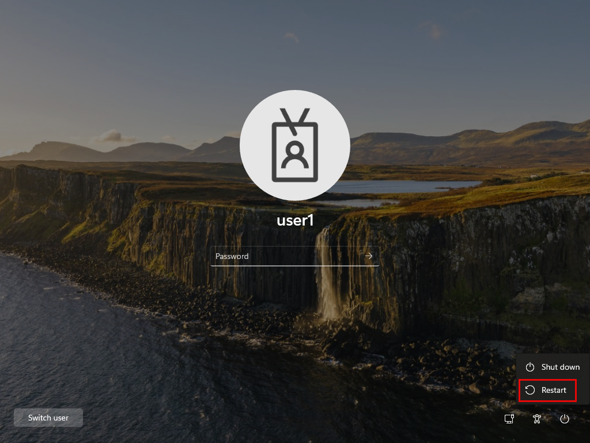
Sign in ด้วย user ที่มี Intune license
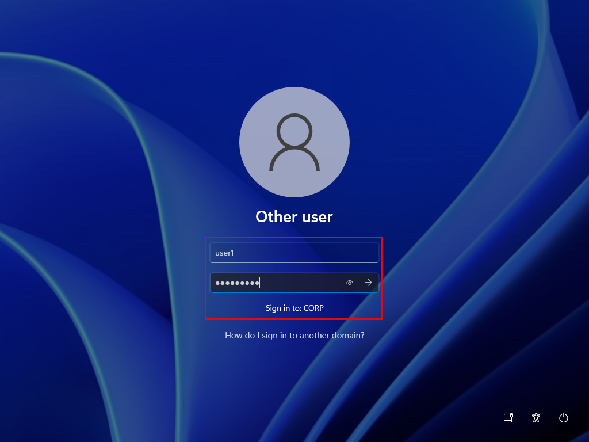
2. แล้วรอสักพัก
ในที่สุดเครื่องก็จะ retreive URL ของ Intune ได้
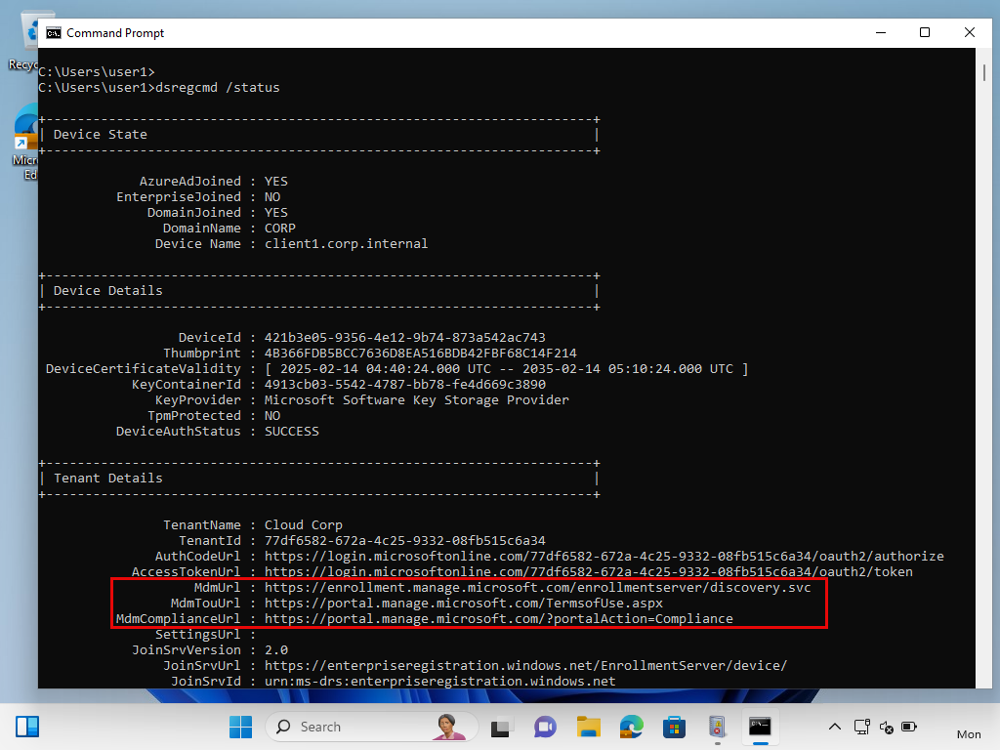
แล้วเข้าไป enroll โดยอัตโนมัติ ผ่าน scheduled task ที่ GPO สร้างขึ้น
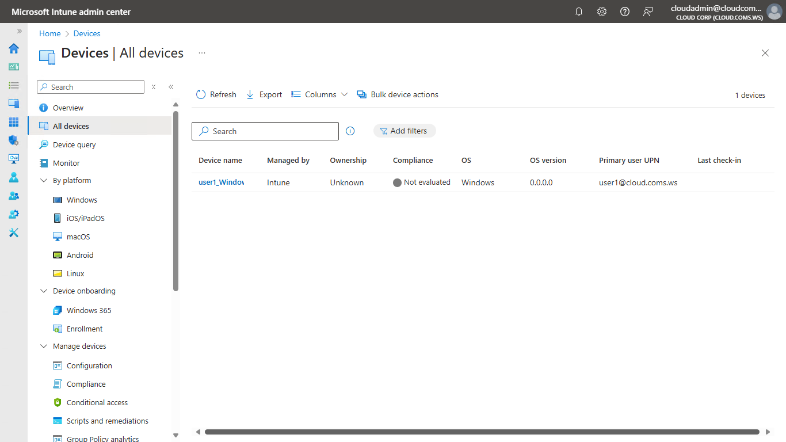
จากนั้นให้เรารอสักพัก ก็จะเรียบร้อย
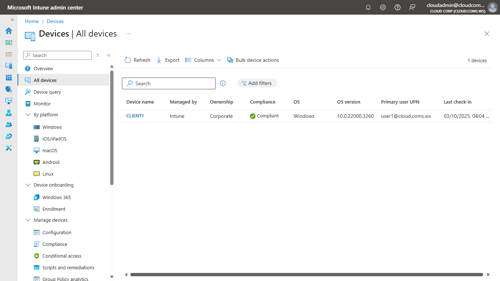
หมายเหตุ:
หาก user ต้องทำ MFA ก่อน access cloud app (ในที่นี้คือ Intune) ก็จะมี ballon ให้ complete authentication
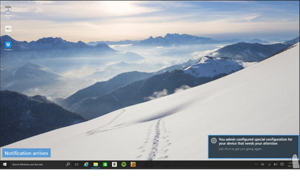
และ (Optional) สามารดูรายละเอียดเพิ่มเติมได้จาก event log ครับ
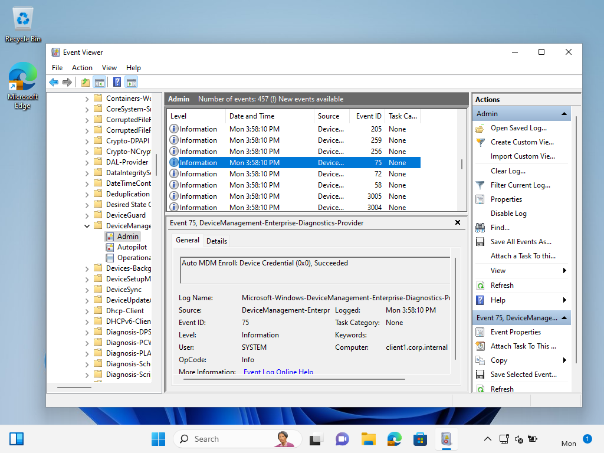
Ref.
...